드롭스톱 체인링Drop-Stop Chainrings
울프투스의 시작. 넓고 좁은 톱니가 번갈아 체인을 붙잡아, 체인 가이드 없이도 1x 구동계에서 체인이 빠지지 않습니다.
- MOUNT
- Direct · BCD
- SHAPE
- Round · Oval
- MATERIAL
- Aluminum
01
Brand
Wolf Tooth ComponentsMinnesota · Since 2013
울프투스 컴포넌트(Wolf Tooth Components)는 2013년 미국 미네소타에서 시작한 자전거 부품·공구 브랜드입니다. 첫 제품은 체인 가이드 없이도 체인이 빠지지 않는 드롭스톱 체인링이었습니다. 앞 변속기를 떼어내는 1x 구동계가 막 퍼져나가던 시기, 울프투스의 체인링은 라이더들이 직접 겪던 문제를 정확히 풀어냈습니다.
그 뒤로도 출발점은 같습니다. 더 큰 카세트를 쓰고 싶을 때, 드로퍼 레버가 손에 맞지 않을 때, 물병 케이지를 옮기고 싶을 때, 트레일에서 체인이 끊어졌을 때. 울프투스는 라이더가 실제로 부딪히는 순간을 찾아, 그 문제를 해결하는 부품과 공구를 만듭니다.

Philosophy
울프투스의 제품은 화려한 마케팅보다 작업대 위에서, 트레일 위에서 먼저 증명됩니다. 엔지니어와 정비사, 라이더가 한 팀으로 일하며 매일 자기 자전거로 테스트하고, 불편한 점이 보이면 다음 제품으로 이어집니다.
정밀하게 가공한 알루미늄과 스틸, 오래 쓰도록 설계한 구조, 그리고 같은 컬러로 맞출 수 있는 아노다이징 마감. 기능과 내구성, 그리고 자전거를 꾸미는 즐거움까지 함께 생각합니다.
체인이 빠지는 문제, 맞지 않는 레버, 부족한 마운트. 울프투스의 모든 제품에는 해결하려는 분명한 문제가 있습니다.
미네소타의 시설에서 설계부터 가공, 마감까지 직접 다룹니다. 품질을 손에서 놓지 않는 방식입니다.
크랭크 마운트, 브레이크 레버 클램프, 헤드셋 규격까지. 하나의 제품을 여러 규격으로 만들어 내 자전거에 맞는 것을 고를 수 있습니다.
체인링과 스페이서, 밸브와 허브까지 같은 아노다이징 컬러로 맞춰, 자전거 전체에 일관된 포인트를 줍니다.
Wolf Tooth Components
The Range
구동계부터 공구, 마운트, 허브까지. 내 자전거의 문제를 해결하는 부품.
울프투스의 시작.
뒤 디레일러의 위치를 바꿔 더 큰 스프라킷의 카세트를 쓸 수 있게 해주는 링크.
시마노 로드 변속 레버로 시마노 MTB 디레일러를 쓸 수 있게 케이블 당김 비율을 바꿔주는 작은 어댑터.
엄지가 자연스럽게 닿는 위치에서 가볍게 눌리는 드로퍼 레버.
라이더가 직접 관리할 수 있도록 설계한 드로퍼 포스트.
두툼한 쿠션의 팻 파우, 손바닥 결을 살린 카브, 얇고 정확한 에코.
정밀 가공한 헤드셋과 스템 스페이서.
체인 마스터 링크 플라이어에 타이어 레버와 밸브 코어 툴을 더하고, 여분의 마스터 링크까지 품은 휴대용 공구.
필요한 공구만 골라 조립하는 모듈형 멀티툴.
핸들바 끝 속에 공구를 숨기는 시스템.
작업대 위에서 매일 쓰는 육각 렌치와 공구 라인.
슬롯 마운트로 케이지를 위아래로 옮길 수 있는 물병 케이지.
물병 보스를 옮기고, 늘리고, 더하는 마운팅 시스템.
페달을 밟는 즉시 물리는 빠른 인게이지먼트의 허브.
발을 받쳐주는 오목한 플랫폼과 교체형 핀의 플랫 페달.
막힘 없이 공기를 넣고, 실런트가 굳어도 관리하기 쉬운 튜브리스 밸브.
02
Drivetrain
Chainrings · GoatLink · Tanpan체인링 · 고트링크 · 탄판
울프투스의 이야기는 체인링에서 시작합니다. 드롭스톱 톱니는 넓고 좁은 톱니가 체인의 안쪽과 바깥쪽 링크를 번갈아 붙잡아, 거친 노면에서도 체인이 빠지지 않습니다. 라운드와 오벌, 다양한 크랭크 마운트 규격으로 내 자전거에 맞는 체인링을 고를 수 있습니다.
고트링크와 로드링크는 기존 디레일러로 더 큰 카세트를 쓰게 해주고, 탄판은 시마노 로드 레버와 MTB 디레일러를 이어줍니다. 구동계 전체를 바꾸지 않고도 원하는 기어 범위를 만드는 방법입니다.
울프투스의 시작. 넓고 좁은 톱니가 번갈아 체인을 붙잡아, 체인 가이드 없이도 1x 구동계에서 체인이 빠지지 않습니다.
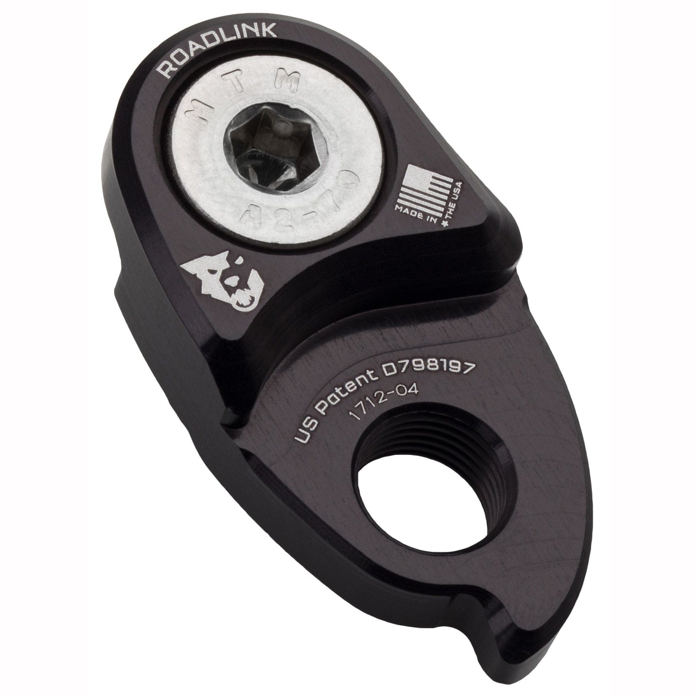
뒤 디레일러의 위치를 바꿔 더 큰 스프라킷의 카세트를 쓸 수 있게 해주는 링크. 산악은 고트링크, 로드와 그래블은 로드링크.
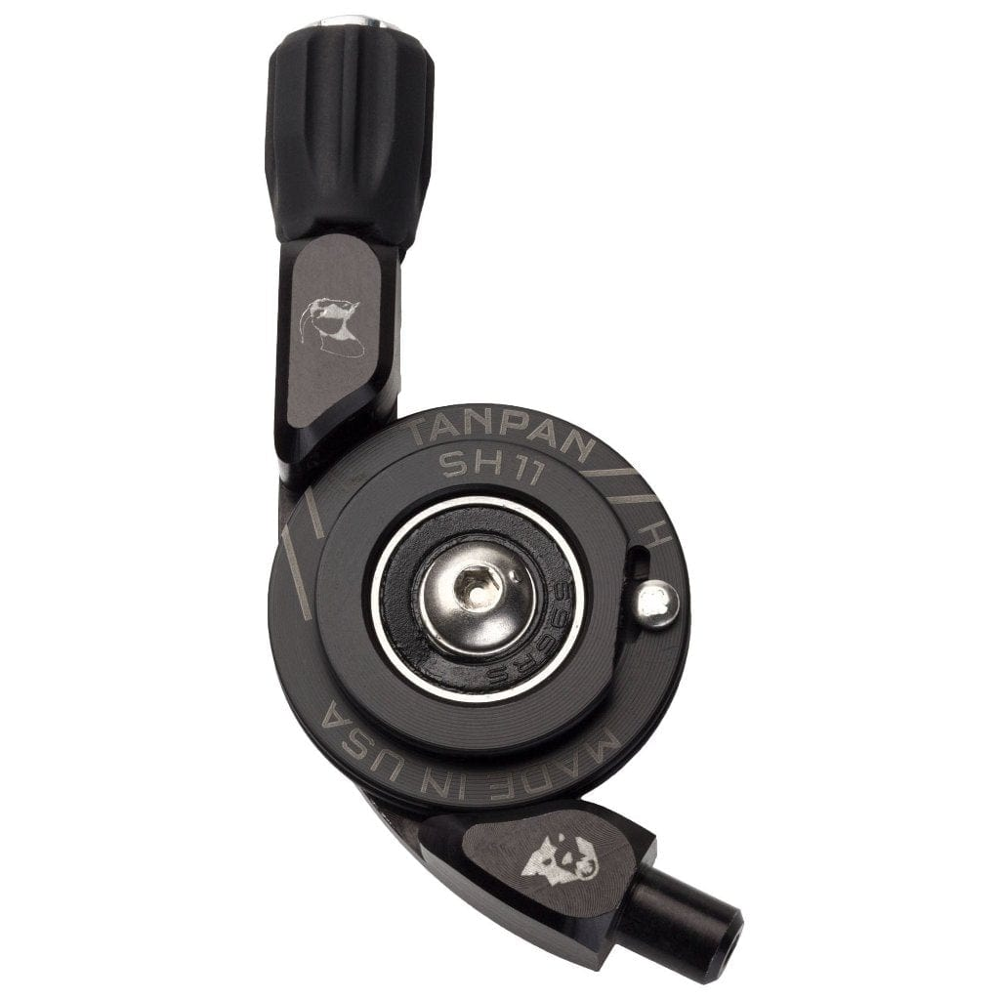
시마노 로드 변속 레버로 시마노 MTB 디레일러를 쓸 수 있게 케이블 당김 비율을 바꿔주는 작은 어댑터. 드롭바 그래블 세팅의 단골 부품입니다.
03
Cockpit · Dropper
ReMote · Resolve · Grips리모트 · 리졸브 · 그립
리모트 레버는 엄지가 자연스럽게 닿는 위치에서 가볍게 눌리도록 설계한 드로퍼 레버입니다. 바 클램프부터 브레이크 레버 일체형 마운트까지 여러 규격으로 나와, 콕핏을 깔끔하게 정리할 수 있습니다. 리졸브 드로퍼 포스트는 라이더가 직접 관리할 수 있는 드로퍼를 목표로 만들었습니다.
손바닥을 받쳐주는 그립과 정밀하게 가공한 헤드셋, 스페이서까지. 핸들바 위의 작은 차이가 라이딩 전체의 감각을 바꿉니다.
엄지가 자연스럽게 닿는 위치에서 가볍게 눌리는 드로퍼 레버. 바 클램프, 매치메이커, I-Spec 등 다양한 마운트로 나옵니다.
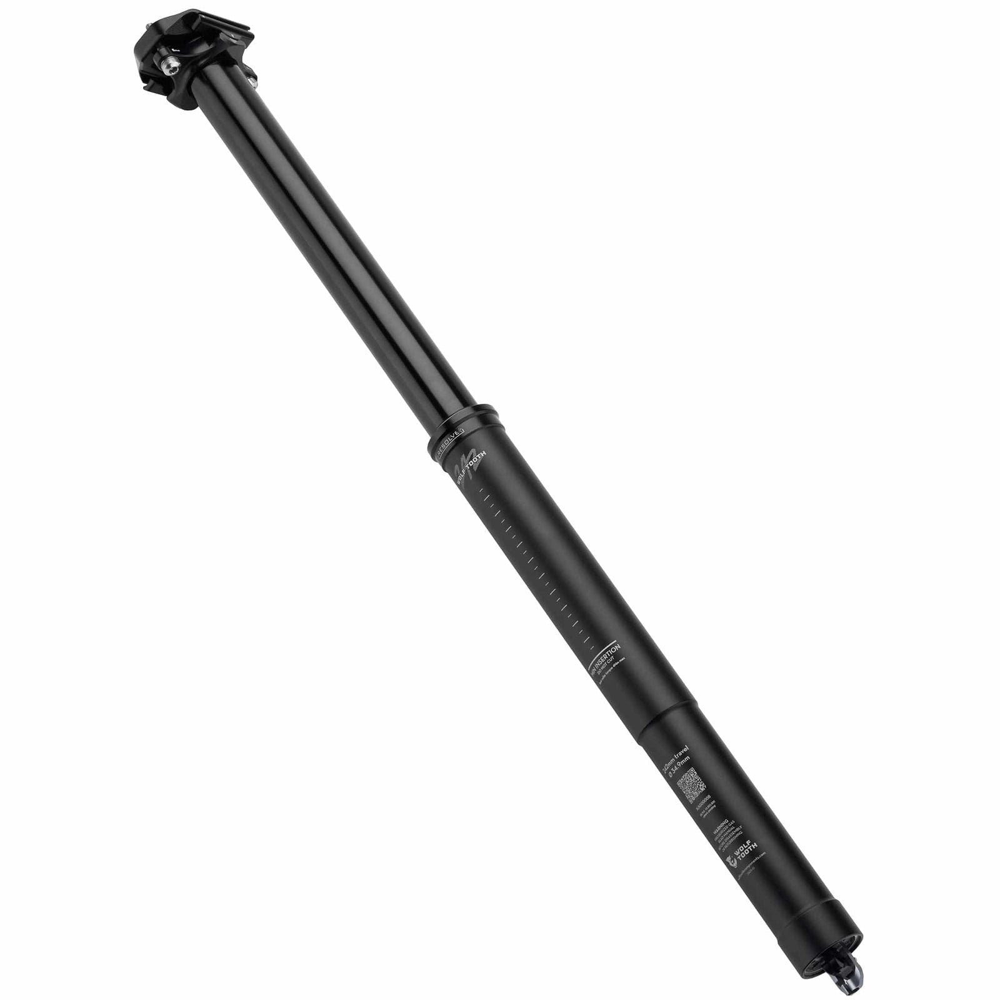
라이더가 직접 관리할 수 있도록 설계한 드로퍼 포스트. 트래블 조절과 간단한 정비를 공구 몇 개로 해결합니다.
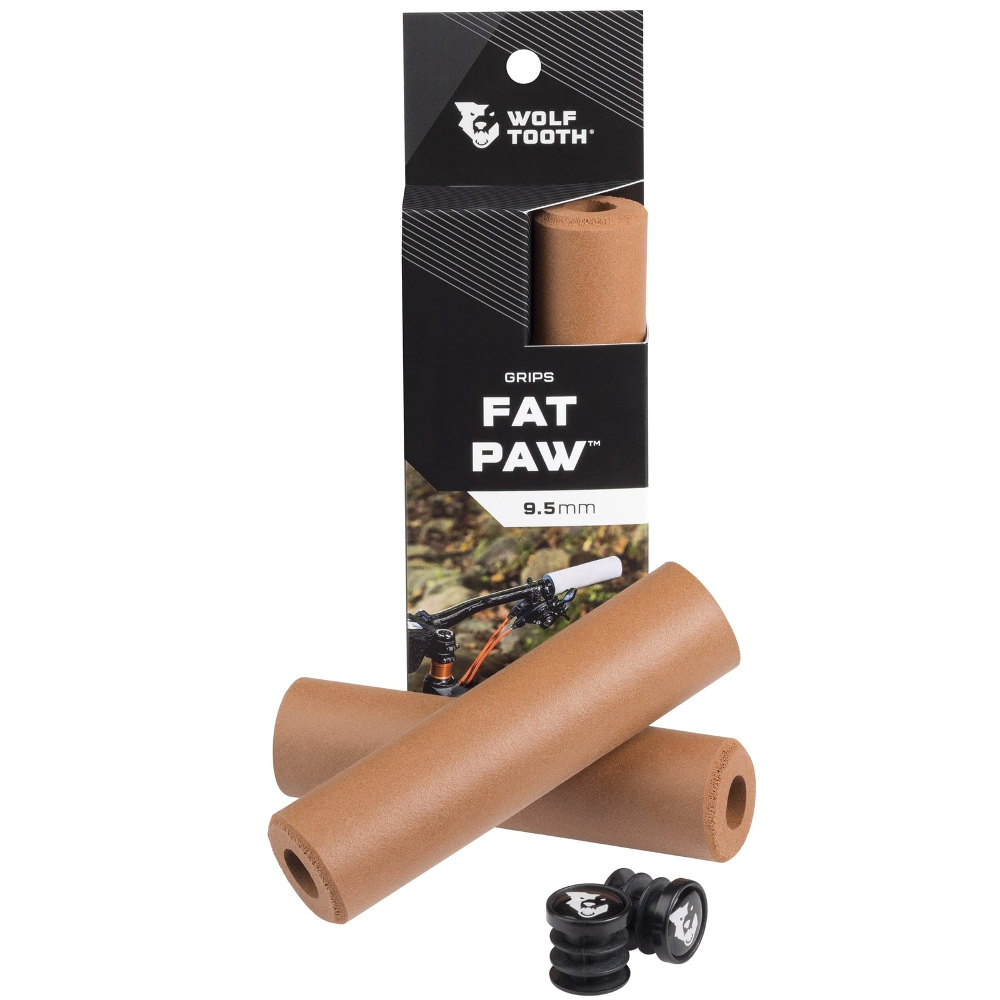
두툼한 쿠션의 팻 파우, 손바닥 결을 살린 카브, 얇고 정확한 에코. 손과 라이딩에 맞춰 고르는 락온 그립.
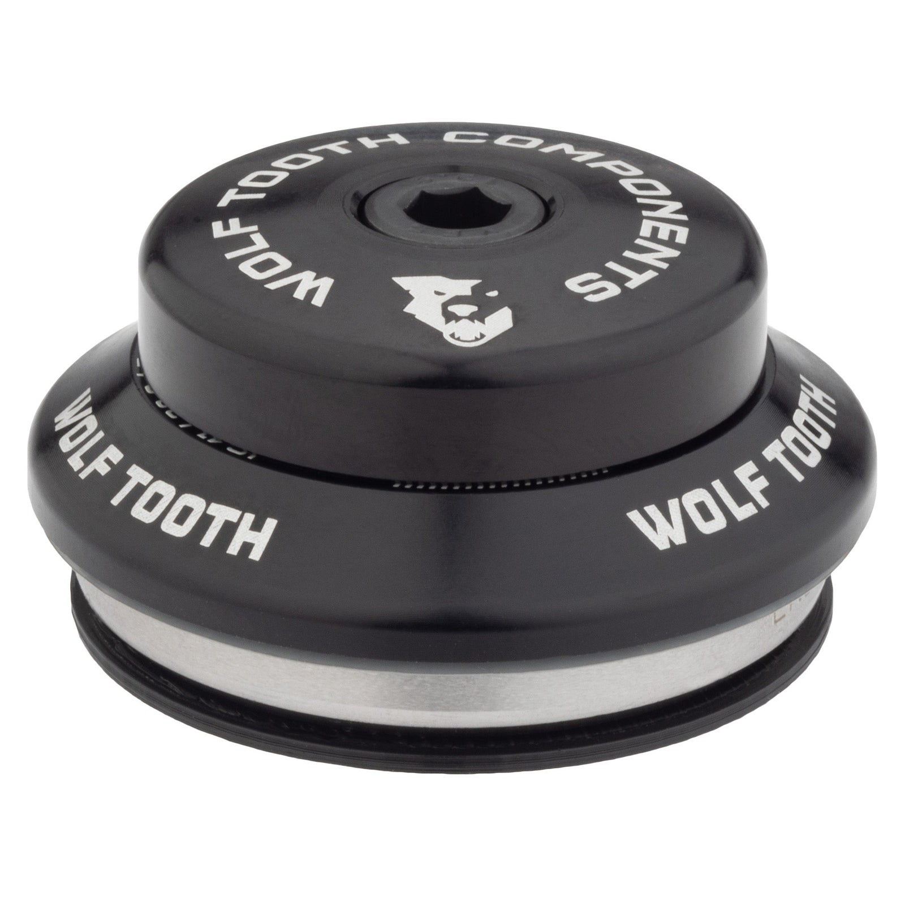
정밀 가공한 헤드셋과 스템 스페이서. 울프투스의 아노다이징 컬러로 콕핏에 포인트를 줍니다.
04
Tools
Pack Pliers · 8-Bit · EnCase팩 플라이어 · 8비트 · 인케이스
정비사와 라이더가 함께 만드는 울프투스의 공구는 실제로 자주 쓰는 기능에서 출발합니다. 팩 플라이어는 체인 마스터 링크를 다루는 플라이어에 타이어 레버와 밸브 코어 툴을 더한 휴대 공구이고, 8비트는 필요한 공구만 골라 조립하는 모듈형 시스템입니다.
인케이스는 공구를 핸들바 속에 넣어 늘 자전거에 싣고 다니게 하고, 텍톤은 작업대 위에서 매일 쓰는 공구 라인입니다. 집과 트레일, 정비 숍까지 쓰임에 맞게 고를 수 있습니다.
체인 마스터 링크 플라이어에 타이어 레버와 밸브 코어 툴을 더하고, 여분의 마스터 링크까지 품은 휴대용 공구.
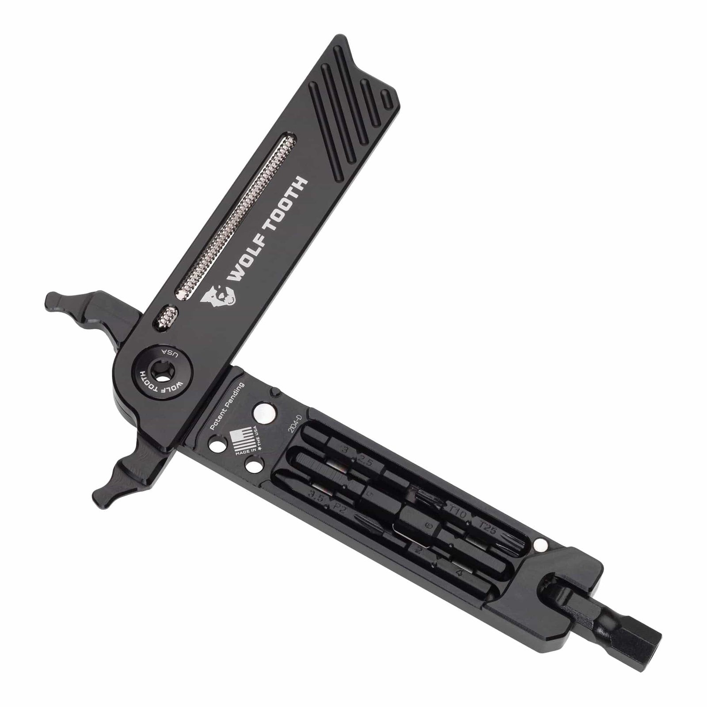
필요한 공구만 골라 조립하는 모듈형 멀티툴. 집에서는 정비 공구로, 라이딩에서는 휴대 공구로 나눠 씁니다.
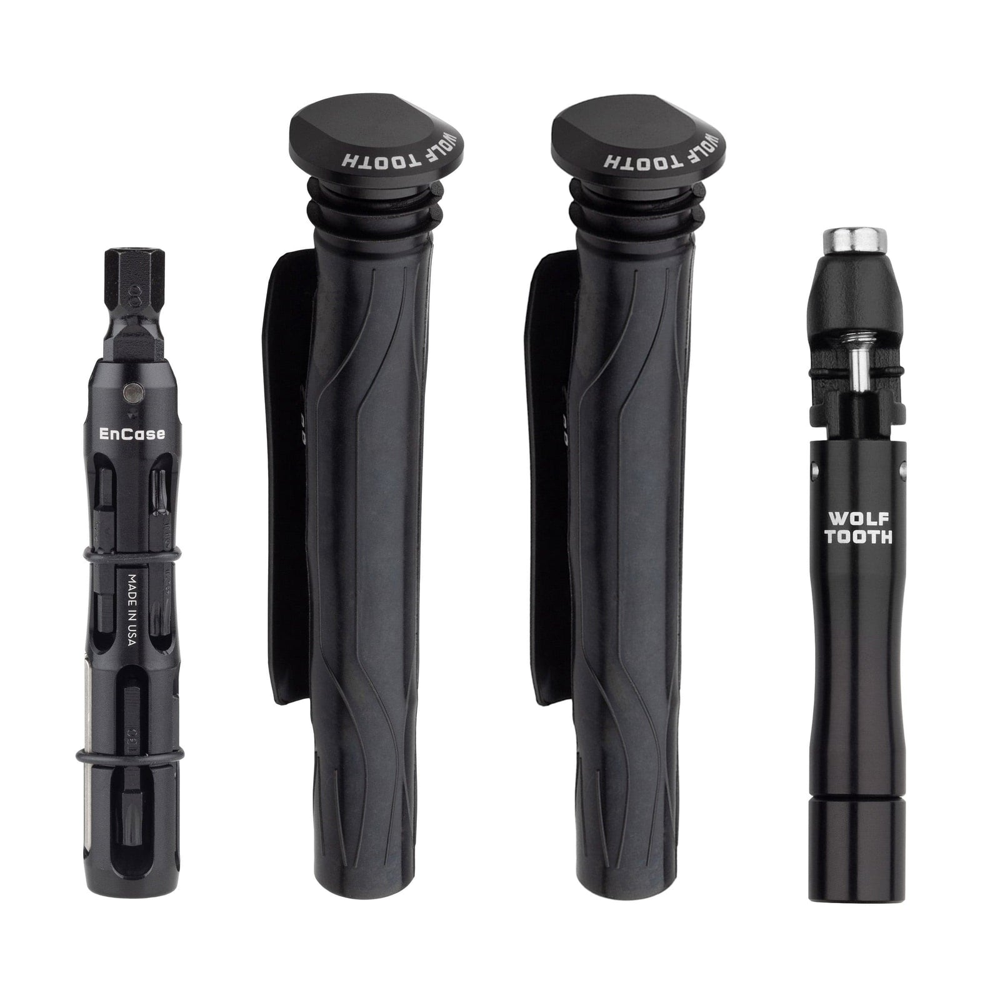
핸들바 끝 속에 공구를 숨기는 시스템. 멀티툴과 체인 공구, 타이어 플러그를 늘 자전거에 싣고 다닙니다.

작업대 위에서 매일 쓰는 육각 렌치와 공구 라인. 손에 쥐는 감각과 정확한 맞물림을 위해 만들었습니다.
05
Cages · Mounts
Morse · B-RAD모스 케이지 · 비래드 시스템
작은 프레임과 풀서스펜션, 프레임 백을 단 바이크패킹 자전거. 물병 보스의 위치가 늘 맞지는 않습니다. 모스 케이지는 슬롯 마운트로 케이지를 위아래로 옮겨 물병을 넣고 빼기 쉬운 자리를 찾고, 비래드 시스템은 마운트 자체를 옮기고 늘려 펌프와 튜브, 공구, 두 번째 물병까지 원하는 자리에 답니다.
슬롯 마운트로 케이지를 위아래로 옮길 수 있는 물병 케이지. 작은 프레임과 프레임 백 아래에서도 물병을 쉽게 뺍니다.
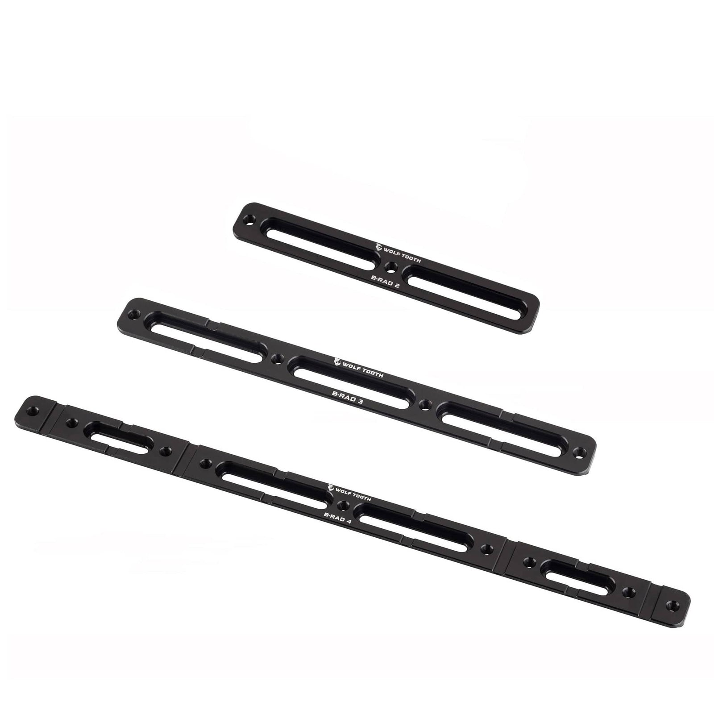
물병 보스를 옮기고, 늘리고, 더하는 마운팅 시스템. 펌프와 튜브, 공구, 두 번째 물병까지 원하는 자리에 답니다.
06
Hubs · Pedals · Valves
Hydra · Waveform하이드라 허브 · 웨이브폼 페달
하이드라 허브는 페달을 밟는 즉시 구동이 걸리는 빠른 인게이지먼트를 목표로 만든 허브입니다. 테크니컬한 오르막에서 페달 한 번의 차이가 라이딩을 바꿉니다. 웨이브폼 페달은 발을 받쳐주는 오목한 플랫폼과 교체형 핀으로 트레일에서 신발을 붙잡습니다.
튜브리스 밸브와 밸브 캡까지, 휠 주변의 작은 부품도 같은 아노다이징 컬러로 맞출 수 있습니다.
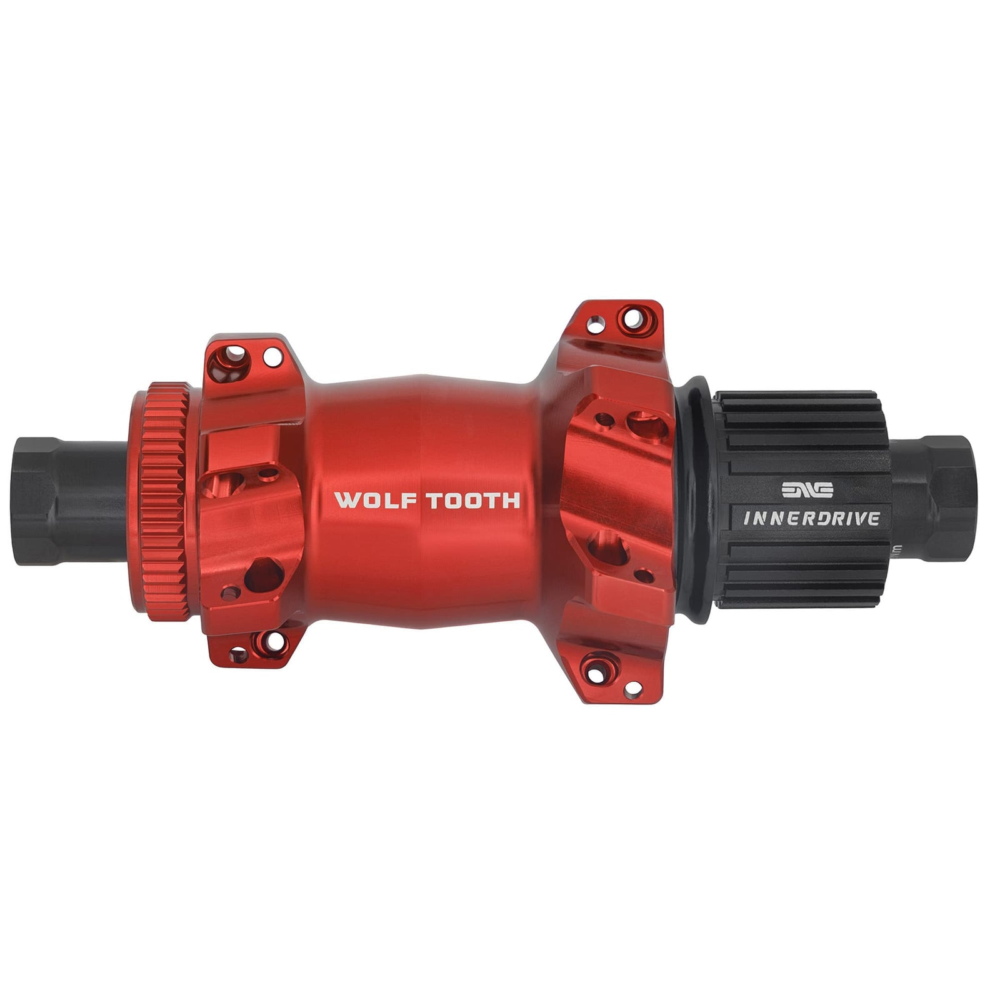
페달을 밟는 즉시 물리는 빠른 인게이지먼트의 허브. 정밀 가공한 셸과 컬러로 휠 빌드의 중심이 됩니다.
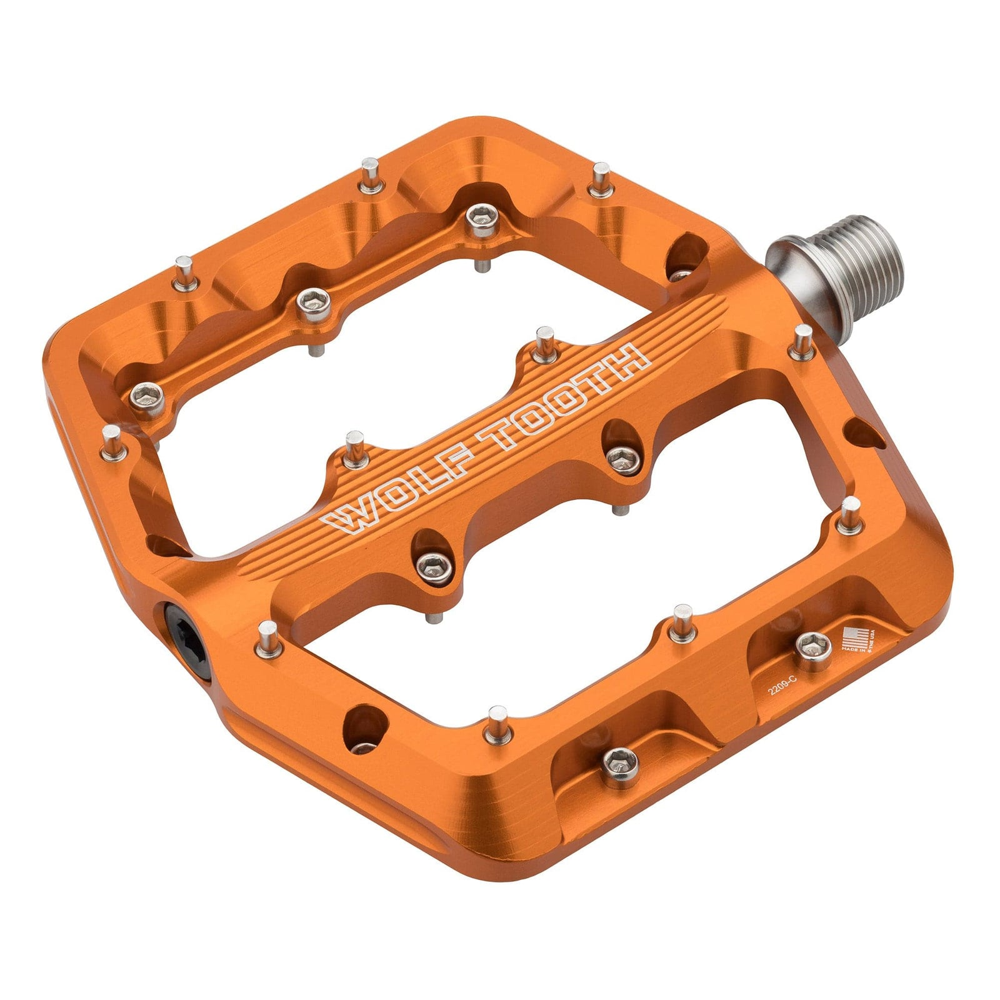
발을 받쳐주는 오목한 플랫폼과 교체형 핀의 플랫 페달. 트레일에서 신발이 페달 위에 단단히 머뭅니다.
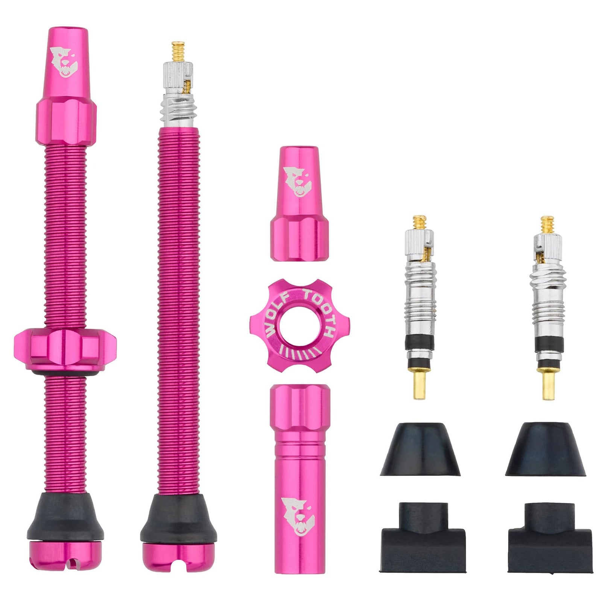
막힘 없이 공기를 넣고, 실런트가 굳어도 관리하기 쉬운 튜브리스 밸브. 아노다이징 컬러의 밸브 캡까지.
07
Anodized Colors
울프투스의 가공 부품은 다양한 아노다이징 컬러로 나옵니다. 스페이서와 체인링, 레버, 밸브, 허브를 같은 컬러로 맞추면 자전거 전체가 하나의 디자인이 됩니다.
화면의 색은 참고용입니다. 제품마다 나오는 컬러 구성이 다르니, 실제 컬러와 재고는 루비워크샵에서 확인해 주세요.
08
Fit Guide
울프투스는 같은 제품을 여러 규격으로 만듭니다. 내 자전거에 맞는 버전을 고르기 위해 아래 항목을 먼저 확인해 주세요.
| 제품 | 확인할 것 | 예시 |
|---|---|---|
| 체인링 | 크랭크의 체인링 마운트 방식과 체인 단수, 체인라인(부스트 여부) | SRAM 8볼트 다이렉트 마운트, 시마노 12단 다이렉트 마운트, 104 BCD |
| 고트링크 · 로드링크 | 뒤 디레일러 모델과 쓰려는 카세트의 가장 큰 톱니 수 | 시마노 로드 · GRX 디레일러 + 와이드 레인지 카세트 |
| 탄판 | 로드 변속 레버와 MTB 디레일러의 단수 조합 | 시마노 11단 로드 레버 + 시마노 11단 MTB 디레일러 |
| 리모트 레버 | 브레이크 레버의 마운트 규격, 바 클램프 사용 여부 | 22.2mm 바 클램프, SRAM 매치메이커, 시마노 I-Spec EV · I-Spec II |
| 드로퍼 포스트 | 시트튜브 내경, 삽입 가능 깊이, 원하는 트래블 | 30.9mm · 31.6mm · 34.9mm |
| 헤드셋 | 프레임의 상·하단 헤드셋 규격 (S.H.I.S. 표기) | ZS44/28.6 | ZS56/40 |
| 인케이스 | 핸들바 끝의 내경 | 알루미늄 · 카본 핸들바별 내경 |
| 튜브리스 밸브 | 림 높이에 맞는 밸브 길이 | 깊은 림일수록 긴 밸브 선택 |
| 허브 | 액슬 규격과 프리허브 바디 | 부스트 148/110, HG · XD · 마이크로 스플라인 |
규격이 헷갈리면 자전거 모델명이나 사진을 보내 주세요. 루비워크샵에서 맞는 버전을 함께 찾아드립니다. 세부 사양은 울프투스 공식 사이트의 제품별 호환표를 기준으로 합니다.
09
Story
Since 2013Minnesota, USA
체인이 빠지지 않는 체인링 하나로 시작한 울프투스는, 라이더의 다음 문제를 하나씩 풀어가며 구동계와 콕핏, 공구, 마운트, 휠까지 영역을 넓혀왔습니다. 제품이 늘어나도 질문은 같습니다. 이 부품은 어떤 문제를 해결하는가.


체인 가이드 없이 체인을 붙잡는 체인링. 1x 구동계와 함께 울프투스의 이름을 알린 첫 제품입니다.
기존 디레일러로 더 큰 스프라킷을 쓰게 해주는 링크. 구동계를 통째로 바꾸지 않고 기어 범위를 넓혔습니다.
드로퍼 포스트가 보급되면서 손에 맞는 레버가 필요해졌습니다. 다양한 마운트의 리모트 레버가 그 답이었습니다.
트레일에서 체인이 끊어졌을 때를 위한 공구. 울프투스 공구 라인의 시작이 됩니다.
물병과 짐을 원하는 자리에. 마운트와 케이지로 바이크패킹과 작은 프레임의 문제를 풀었습니다.
공구를 자전거 속에, 그리고 필요한 만큼만. 휴대 공구에 대한 새로운 접근입니다.
드로퍼 포스트와 허브까지. 울프투스는 이제 자전거의 핵심 부품을 직접 만듭니다.
페달까지 이어진 라인업. 발 아래에서도 같은 질문, 어떤 문제를 해결하는가.

10 · Showroom
부품은 내 자전거에 맞아야 의미가 있습니다. 루비워크샵에서 울프투스 제품을 직접 보고, 자전거에 맞는 규격과 컬러를 함께 찾아드립니다. 장착과 세팅도 맡겨 주세요.
For Dealers
울프투스 제품의 매장 입점과 거래 조건은 루비컴퍼니의 B2B 채널 루비서플라이로 문의해 주세요.